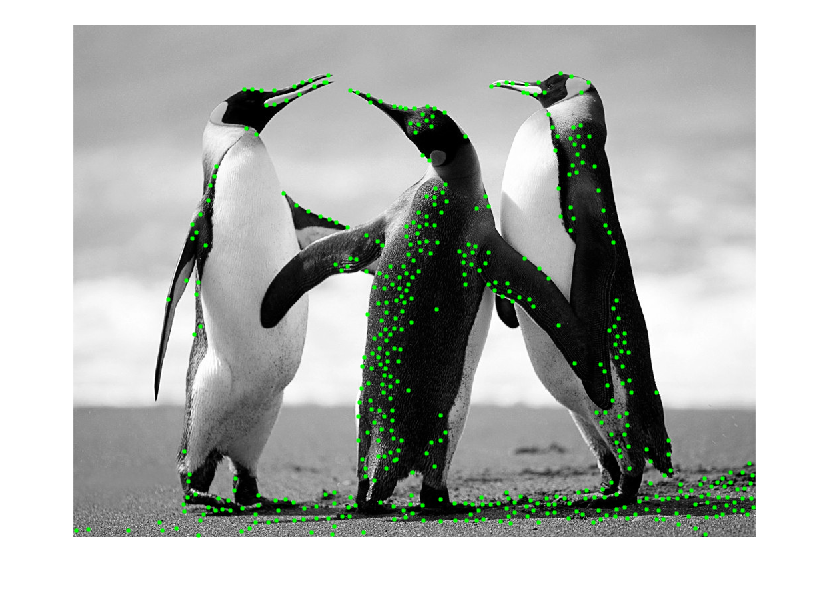

% Read the image into Matlab and name it myImage myImage = imread("Penguins.jpg"); % Convert the rgb image to grayscale myImage = rgb2gray(myImage); % Cast the variable to double and reassign it to itself myImage = double(myImage); % Create X and Y derivative filters dxFilter = [-1 0 -1; -1 0 1; -1 0 1]; dyFilter = dxFilter'; % Create an X derivative image and a Y derivative image by convolving % the appropriate filters with the grayscale image. Use the following % names for the new images: myImageDerivativeX and myImageDerivativeY myImageDerivativeX = conv2(myImage, dxFilter, 'same'); myImageDerivativeY = conv2(myImage, dyFilter, 'same'); % Now that we have the derivatives, we can calculate A, B, & C A = myImageDerivativeX .^2; B = myImageDerivativeY .^2; C = myImageDerivativeX .* myImageDerivativeY; % After you calculate the above you want to apply Gaussian smoothing (using % a Gausssian Filter) using the conv2 command. Store each of the smoothed % derivatives in smoothdA, smoothedB, & smoothedC. You can use the % following command to create your Gaussian filter: gaussianFilter = fspecial('gaussian'); smoothedA = conv2(A, gaussianFilter, 'same'); smoothedB = conv2(B, gaussianFilter, 'same'); smoothedC = conv2(C, gaussianFilter, 'same'); % In order to compute the Corner Response Function, we use the following % formula (define alpha 0.04): alpha = 0.04; cornerResponseFunction = (smoothedA .* smoothedB - smoothedC.^2) - alpha * (smoothedA + smoothedB).^2; % Next we need to create our isLocalMax function. The Corner Response % Function usually will have several 'corners' all that appear in the same % area. The function will help us determine which is the best corner for % our program to use. Use the following code for 'isLocalMax': function [myBool] = isLocalMax(harrisMatrix, u, v) height = size(harrisMatrix, 1); width = size(harrisMatrix, 2); if (u <= 1 || u >= height || v <= 1 || v >= width) myBool = false; else % return the image as a 1D array pix = reshape(harrisMatrix, height*width, 1); i0 = (v-1)*height+u; i1 = v*height+u; i2 = (v+1)*height+u; cp = pix(i1); myBool = (cp > pix(i0-1) && cp > pix(i0) && cp > pix(i0+1) && cp > pix(i1-1) && cp > pix(i1+1) && cp > pix(i2-1) && cp > pix(i2) && cp > pix(i2+1)); end end % We use the below function to help us determine the best corners to use. % We do this by stepping through our Corner Reponse Function matrix and % check to see if it's value is greater than a certain threshold and it is % a local max (this is checked by calling the isLocalMax fucntion %Implement the pseudocode listed below to perform the above task: % For each u: % For each v: %if(cornerResponseFunction(u,v) > threshold && islocalMax(cornerResponseFuncton, u, v) % increment totalCorners by 1. % Add the corner to our list (each corner contains u,v,q) % cornerList (totalCorners) .x = u; % cornerList (totalCorners) .y = v; % cornerList (totalCorners) .q = q; % Initialize totalCorners to zero totalCorners = 0; threshold = 200000; % Initalize cornerList as an empty struct array cornerList = struct('x', {}, 'y', {}, 'q', {}); % For each u: for u = 1:size(cornerResponseFunction, 1) % For each v: for v = 1:size(cornerResponseFunction, 2) if cornerResponseFunction(u,v) > threshold && isLocalMax(cornerResponseFunction, u, v) % Increment totalCorners by 1 totalCorners = totalCorners + 1; % Add the corner to our list (each corner contains u,v,q) cornerList(totalCorners).x = u; cornerList(totalCorners).y = v; cornerList(totalCorners).q = cornerResponseFunction(u,v); end end end % Output the total number of corners that passsed the threshold and isLocalMax fprintf('Total number of corners: %d\n', totalCorners); % Sort the corners by their respective q value in descending order [~, sortIdx] = sort([cornerList.q], 'descend'); cornerList = cornerList(sortIdx); % Create a new variable goodCorners and initialize it into an empty array goodCorners = []; % Our corner response function may return a lot of corners that can be % quite close to each other. What we'd like to do next is define a min % distance that we want these functions (corners) to be from each other. % We'll then want to step through each of the corners and remove the ones % that are too close to each other. We do this by starting with the % strongest corner that we found (the first one in the list because it's % sorted) and remove other corners that are within the min distance to this % point. % First thing we will want to do is initialize min distance minDistance = 10; while(size(cornerList,2) > 0) cl = cornerList(1); % remove the first one cornerList = cornerList (2:end); goodCorners = [goodCorners cl]; cornersToRemove = []; for i=2:size(cornerList,2) if (sqrt((cl.x - cornerList(i).x)^2 + (cl.y - cornerList(i).y)^2) < minDistance) cornersToRemove = [cornersToRemove i]; end end % Remove the corners that we found are too close cornerList(cornersToRemove) = []; end % Step through the goodCorners list and mark each of the corners in the % image with a green 'cross' or x that is 3 pixels in width and height % Display the image to the user figure; imshow(uint8(myImage)); hold on for i = 1:length(goodCorners) plot(goodCorners(i).y, goodCorners(i).x, 'g+','MarkerSize',3, 'LineWidth',2); end hold off;
Total number of corners: 1121